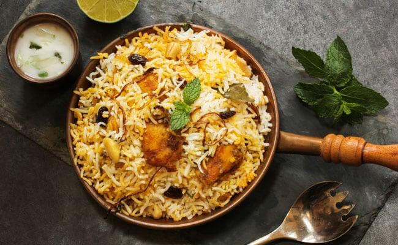

Mauritian Chicken Biryani

Description
Biryani is such a unique dish full of flavours who will ravish the mouth of any person tasting it. It is one of the most famous dishes in Mauritius and the favorite of nearly every Mauritians, often cooked when celebrating something special like for a wedding or any other festivals.
Ingredients
- 1.5 kg Basmati Rice
- 1 kg Onion (sweet onion is preferred)
- 1 kg Potato
- 1.5 kg Chicken (leg or thigh)
- Chopped Coriander and Mint leaves
- Salt and vegetable oil
- Ginger and Garlic Paste
- 1 Cup Yoghurt
- Yellow Food Colouring
- Butter Ghee
- Biryani Spices
- 3 Green Chillies
- Anise seeds, cinnamon and cardamom for rice
Steps
- Chop and deep fry 3/4 of onions (Can be fried night before and keep in refrigerator to save time). Tip: While frying add a pinch of salt to make it more crispy
- Drain, spread the fried onions on a plate and keep aside
- Peel, cut potatoes in halves and fork
- Add salt and food colouring
- Deep fry on high heat. Tip: Potatoes should be well fried as compared to chicken
- Blend the remaining 1/4 of onions, adding a little water and keep aside
- Marinate the chicken with salt and 2 tbsp of ginger garlic paste
- Quick fry the chicken (optional) - Do not over fry. Tip: Frying the chicken prevent it from falling apart while cooking
- Wash and soak rice. Tip: use high quality long grain rice and soak for atleast 30 minutes
- In the cooking pot, pour the onion paste, add 5 tbsp of ginger garlic paste, add 4 tbsp of Biryani spices, add 1/2 of fried onions
- Carefully, place the chicken and potatoes, add 2 cups of water, add green chillies, add the chopped mint and coriander leaves
- Add 1 cup of yogurt and salt to taste, Tip: Hold the pot, move to mix to prevent chicken and potatoes from coming into pieces
- Boil water in another pot for rice, add salt to taste, pour the soaked rice
- Add anise seeds, cardamom and cinnamon,Tip: Do not overboil or underboil rice. To check if the rice is done, press one, if it breaks easily then it is cooked just right
- When water starts to boil again, use a slotted spoon to transfer the rice to the cooking pot by layers adding fried onions in between, Tip: Transfering in little quantity make sure that rice on top are better boiled than bottom
- Pour a little food colour mixed with water, top with butter ghee and rest of fried onions
- Cover and let cook on dum (low heat) for 20 minutes, Tip: Use a load on top of the pot
- Use a long cutlery (e.g a fork) to penetrate into the Biryani to check if the spices have dried
- Serve with chutney, tomato salsa, cucumber and carrot salad and pickles
Return to Homepage